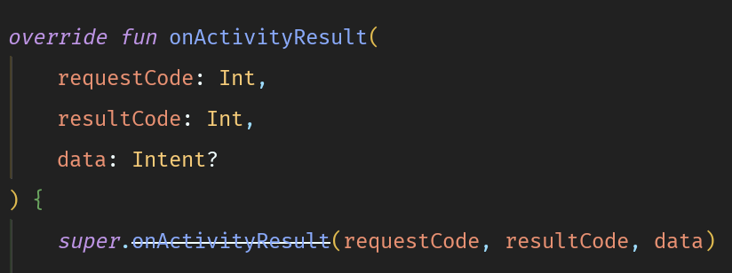

OnActivityResult method is deprecated, what is the alternative?
I recently discovered that onActivityResult is deprecated. What should we do
to handle it?
Any alternative introduced for that?

Answer
A basic training is available at developer.android.com.
Here is an example on how to convert the existing code with the new one:
The old way:
public void openSomeActivityForResult() { Intent intent = new Intent(this, SomeActivity.class); startActivityForResult(intent, 123); } @Override protected void onActivityResult (int requestCode, int resultCode, Intent data) { if (resultCode == Activity.RESULT_OK && requestCode == 123) { doSomeOperations(); } }
The new way (Java):
public void openSomeActivityForResult() { Intent intent = new Intent(this, SomeActivity.class); someActivityResultLauncher.launch(intent); } // You can do the assignment inside onAttach or onCreate, i.e, before the activity is displayed ActivityResultLauncher<Intent> someActivityResultLauncher = registerForActivityResult( new ActivityResultContracts.StartActivityForResult(), new ActivityResultCallback<ActivityResult>() { @Override public void onActivityResult(ActivityResult result) { if (result.getResultCode() == Activity.RESULT_OK) { // There are no request codes Intent data = result.getData(); doSomeOperations(); } } });
The new way (Kotlin):
fun openSomeActivityForResult() { val intent = Intent(this, SomeActivity::class.java) resultLauncher.launch(intent) } var resultLauncher = registerForActivityResult(StartActivityForResult()) { result -> if (result.resultCode == Activity.RESULT_OK) { // There are no request codes val data: Intent? = result.data doSomeOperations() } }
EDIT. A better approach would be to make it more generalised so that we can reuse it. The snippet below is used in one of my projects but beware that it's not well-tested and may not cover all the cases.
BetterActivityResult.java
import android.content.Intent; import androidx.activity.result.ActivityResult; import androidx.activity.result.ActivityResultCaller; import androidx.activity.result.ActivityResultLauncher; import androidx.activity.result.contract.ActivityResultContract; import androidx.activity.result.contract.ActivityResultContracts; import androidx.annotation.NonNull; import androidx.annotation.Nullable; public class BetterActivityResult<Input, Result> { /** * Register activity result using a {@link ActivityResultContract} and an in-place activity result callback like * the default approach. You can still customise callback using {@link #launch(Object, OnActivityResult)}. */ @NonNull public static <Input, Result> BetterActivityResult<Input, Result> registerForActivityResult( @NonNull ActivityResultCaller caller, @NonNull ActivityResultContract<Input, Result> contract, @Nullable OnActivityResult<Result> onActivityResult) { return new BetterActivityResult<>(caller, contract, onActivityResult); } /** * Same as {@link #registerForActivityResult(ActivityResultCaller, ActivityResultContract, OnActivityResult)} except * the last argument is set to {@code null}. */ @NonNull public static <Input, Result> BetterActivityResult<Input, Result> registerForActivityResult( @NonNull ActivityResultCaller caller, @NonNull ActivityResultContract<Input, Result> contract) { return registerForActivityResult(caller, contract, null); } /** * Specialised method for launching new activities. */ @NonNull public static BetterActivityResult<Intent, ActivityResult> registerActivityForResult( @NonNull ActivityResultCaller caller) { return registerForActivityResult(caller, new ActivityResultContracts.StartActivityForResult()); } /** * Callback interface */ public interface OnActivityResult<O> { /** * Called after receiving a result from the target activity */ void onActivityResult(O result); } private final ActivityResultLauncher<Input> launcher; @Nullable private OnActivityResult<Result> onActivityResult; private BetterActivityResult(@NonNull ActivityResultCaller caller, @NonNull ActivityResultContract<Input, Result> contract, @Nullable OnActivityResult<Result> onActivityResult) { this.onActivityResult = onActivityResult; this.launcher = caller.registerForActivityResult(contract, this::callOnActivityResult); } public void setOnActivityResult(@Nullable OnActivityResult<Result> onActivityResult) { this.onActivityResult = onActivityResult; } /** * Launch activity, same as {@link ActivityResultLauncher#launch(Object)} except that it allows a callback * executed after receiving a result from the target activity. */ public void launch(Input input, @Nullable OnActivityResult<Result> onActivityResult) { if (onActivityResult != null) { this.onActivityResult = onActivityResult; } launcher.launch(input); } /** * Same as {@link #launch(Object, OnActivityResult)} with last parameter set to {@code null}. */ public void launch(Input input) { launch(input, this.onActivityResult); } private void callOnActivityResult(Result result) { if (onActivityResult != null) onActivityResult.onActivityResult(result); } }
With the above approach, you still have to register it before or during
launching the activity or fragment attachment. Once defined, it can be reused
within the activity or fragment. For example, if you need to start new
activities in most of the activity, you can define a BaseActivity and
register a new BetterActivityResult like this:
BaseActivity.java
public class BaseActivity extends AppCompatActivity { protected final BetterActivityResult<Intent, ActivityResult> activityLauncher = BetterActivityResult.registerActivityForResult(this); }
After that, you can simply launch an activity from any child activities like this:
public void openSomeActivityForResult() { Intent intent = new Intent(this, SomeActivity.class); activityLauncher.launch(intent, result -> { if (result.getResultCode() == Activity.RESULT_OK) { // There are no request codes Intent data = result.getData(); doSomeOperations(); } }) }
Since you can set the callback function along with the Intent, you can reuse
it for any activities.
Similarly, you can also use other activity contracts using the other two constructors.
Suggest
From now, startActivityForResult() has been deprecated so use new method
instead of that.
Kotlin Example
fun openActivityForResult() { startForResult.launch(Intent(this, AnotherActivity::class.java)) } val startForResult = registerForActivityResult(ActivityResultContracts.StartActivityForResult()) { result: ActivityResult -> if (result.resultCode == Activity.RESULT_OK) { val intent = result.data // Handle the Intent //do stuff here } }